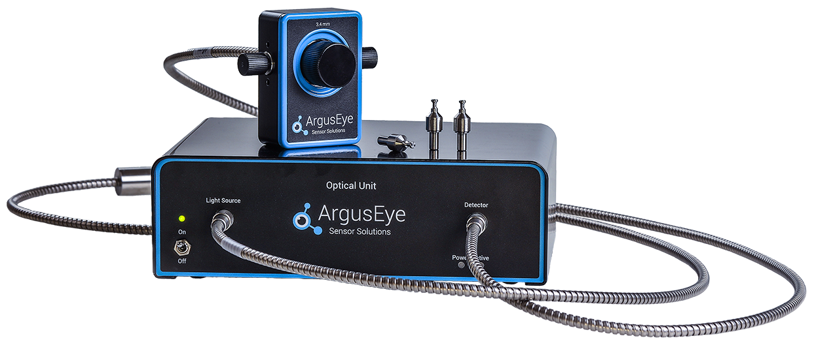

PAT technology
What is PAT?
Process Analytical Technology (PAT) is a framework initiated by the FDA to design, analyze, and control pharmaceutical manufacturing processes through the measurement of critical quality and performance attributes. The goal of PAT is to ensure consistent product quality by understanding and controlling the manufacturing process in real time.
PAT enables manufacturers to:
- Monitor key process parameters and material attributes.
- Reduce production cycle times.
- Minimize batch failures and improve efficiency.
- Move from batch to continuous manufacturing.
Examples of PAT technology
- Spectroscopy (e. g. NIR, Raman)
Used to monitor blend uniformity, moisture content, or API concentration during mixing or drying. - Particle Size Analysis
Real-time laser diffraction or imaging to control grnulation or milling processes. - pH and Conductivity Sensors
Inline sensors used in bioprocessing to maintain optimal conditions for cell growth or protein purification. - Mass spectrometry.
Applied in biopharmaceuticals to monitor metabolite profiles or product quality attributes. - Multivariate Data Analysis (MVDA)
Combines data from multiple sensors to predict product quality and optimize process parameters.
ArgusEye sensor
Argus Eye home pageWhat is Argus Eye
ArgusEye (by ArgusEye AB) is a real-time bioprocess analytics system designed for the biopharmaceutical industry. It supports Process Analytical Technology (PAT) frameworks by enabling inline and online monitoring of critical parameters during manufacturing.
Technology
Sensor Technology: LSPR-Based Biosensing
- LSPR (Localized Surface Plasmon Resonance)
The core sensing mechanism utilizes LSPR, where nanoscale metallic structures (usually gold) generate plasmon resonances sensitive to molecular binding events on their surface. This allows label-free, real-time detection of biomolecules. - Label-free detection provides live analytics without needing fluorescent or radioactive tags, reducing interference and simplifying workflow.
- Continuous monitoring directly in-process—meaning the sensor regularly reads samples from live bioreactors or downstream streams—allowing immediate feedback and control
Auga Platform: ArgusEye's Implementation
ArgusEye’s product line is called Auga™, comprising modules like:
- Sensor Chips tailored for specific targets:
- Protein A
- Protein G
- Protein L
These chips can detect antibodies, Fc fragments, or binds used in affinity purification. - AugaOne:
An on-line system that integrates sensor chips for seamless inline monitoring during processes like chromatography
PAT Benefits enabled by ArgusEye
- Continuous, real-time data delivery immediately influence decision-making.
- Data-drive intensification: offers insights for real-time process optimization.
- Regulatory compliance:aligned with FDA's PAT initiatives for better process understand and control.
Typical Applications
ArgusEye's sensors are build for:
- Affinity purification - monitor protein A/G bound antibodies.
- Aggregation tracking - detect protein aggregates in real-time.
- Antibody quantification - essential for yield and purity in mAb production.